Analysis | |
| Prev | Normal Surfaces and Hypersurfaces | Next |
Once you have built a list of surfaces or hypersurfaces, you can study them using the various tabs in the normal (hyper)surface list viewer.
Above all of these tabs is a header displaying the total number of (hyper)surfaces, the original enumeration parameters, and a link to the underlying triangulation. The enumeration parameters include:
whether you asked for vertex or fundamental (hyper)surfaces;
whether you asked for embedded (hyper)surfaces only, or for immersed and/or branched (hyper)surfaces also;
the normal or almost normal coordinate system in which you performed the enumeration.
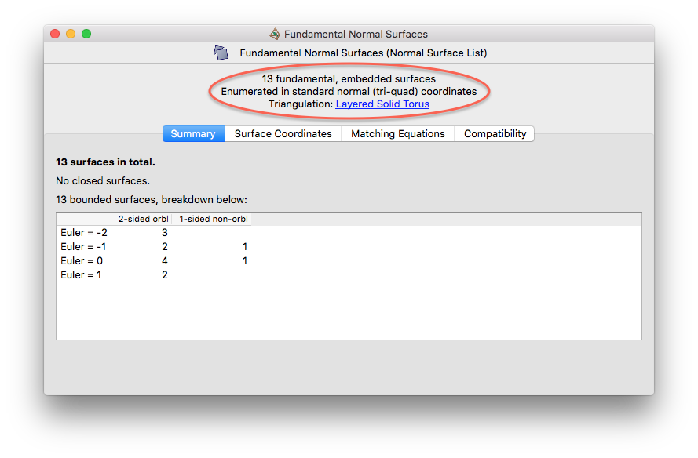
There are some unusual comments that you might see in this header if you are using old data files and/or customised software:
- Legacy surfaces
You might see this instead of vertex or fundamental surfaces. This means that the list of surfaces was created using Regina 4.93 or earlier (which did not save information on whether the surfaces you enumerated were vertex or fundamental).
- Custom (hyper)surfaces
You might see this instead of vertex or fundamental (hyper)surfaces. This means that the list was created using some specialised or user-designed algorithm, and Regina cannot give you any more specific information about which surfaces or hypersurfaces these are.
- Legacy almost normal coordinates
This indicates that the list was created using Regina 4.5.1 or earlier, and that surfaces with more than one octagon were deleted. See the discussion on legacy coordinates for details.
As of version 4.94, Regina also remembers details of the specific enumeration algorithm that was used. This information is not shown in the user interface, but can be extracted using Python scripting.
The Summary tab breaks down the total number of (hyper)surfaces into sub-counts for different types of (hyper)surfaces, as illustrated below. At a broad level, the total is divided into:
closed (hyper)surfaces, which do not meet the boundary of the triangulation and contain only finitely many normal pieces;
bounded (hyper)surfaces, which do meet the boundary of the triangulation and again only have finitely many normal pieces;
spun-normal surfaces in 3-manifold triangulations, which have infinitely many triangles;
non-compact hypersurfaces in 4-manifold triangulations, which have infinitely many tetrahedra.
For each category that contains one or more (hyper)surfaces, a table is shown to break this down further according to various simple properties. These include orientability, 1-or-2-sidedness, Euler characteristic (within 3-manifolds only), and homology (within 4-manifolds only).
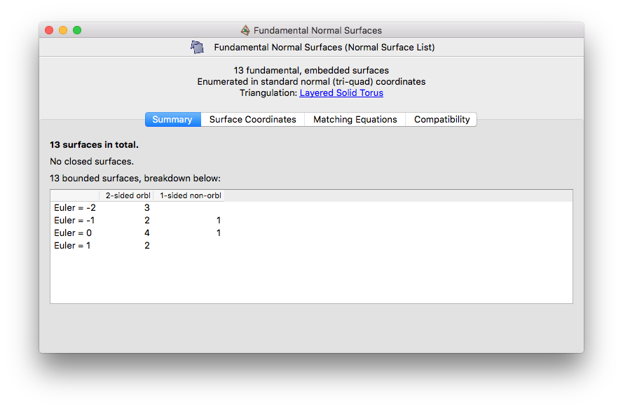
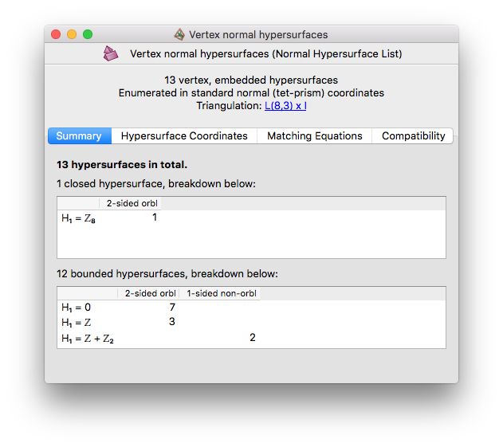
Note
Spun-normal surfaces and non-compact hypersurfaces will only be explicitly mentioned in the Summary tab if your enumeration coordinate system supports them. In particular, for normal hypersurfaces in 4-manifold triangulations, non-compact surfaces should never be mentioned at all, unless you have used a specialised hand-coded enumeration algorithm.
You can view details of the individual surfaces in the Surface Coordinates or Hypersurface Coordinates tab. This brings up a large table in which each row represents a single normal (or almost normal) surface or hypersurface.
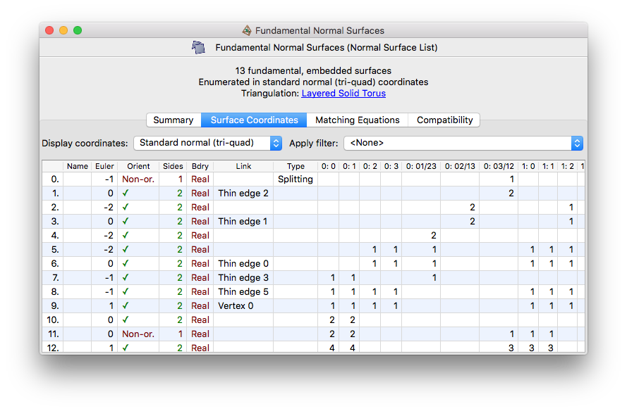
Above the table are some drop-down boxes that let you view the list in different coordinate systems, and—for 3-manifolds only—with different filters applied. These options are discussed further in the notes on coordinate systems and filtering surfaces respectively.
In the first column, (hyper)surfaces are numbered 0,1,2,… in no particular order, so that you can make note of them for later on. You can also assign arbitrary names to (hyper)surfaces by typing directly into the second column; these names will be saved with your data file.
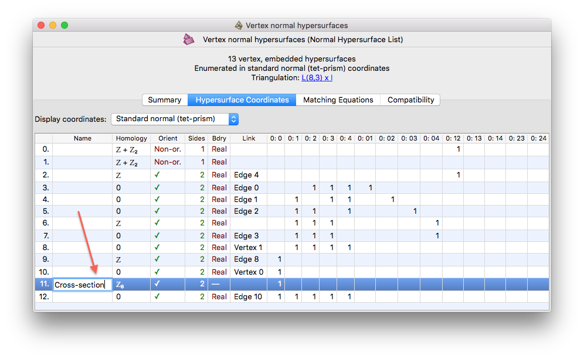
The next few columns describe various properties of each (hyper)surface. Some of these columns might be empty or absent in your viewer (for instance, Regina does not compute Euler characteristic for spun-normal surfaces, and it hides several columns if your enumeration allowed for immersed or singular surfaces).
The columns and their meanings are:
- Euler (for 3-manifolds only)
Shows the Euler characteristic of the surface.
- Homology (for 4-manifolds only)
Shows the first homology group of the hypersurface.
- Orient
Contains a tick (✓) if the (hyper)surface is orientable, or the text Non-or. if it is not.
- Sides
Shows whether the (hyper)surface is one-sided or two-sided.
- Bdry
Indicates what type of boundary the (hyper)surface has. This will be one of:
- —
Indicates a closed, compact (hyper)surface; that is, with no boundary at all and finitely many normal pieces.
- Real
Indicates a compact (hyper)surface with boundary; that is, with finitely many normal pieces, some of which meet the boundary of the triangulation.
- Spun (3-manifolds only)
Indicates a spun-normal surface; that is, a non-compact surface with infinitely many triangles. These only appear when the enumeration is done in quadrilateral or quadrilateral-octagon coordinates.
Regina can compute boundary slopes for spun-normal surfaces, but only for quadrilateral coordinates (not quadrilateral-octagon coordinates), only for orientable 3-manifolds, and only for SnapPea triangulation packets (because Regina's native triangulation packets do not provide a meridian and longitude on each cusp).
If you have a native Regina triangulation and you wish to view boundary slopes for spun-normal surfaces, you must first convert it to a SnapPea triangulation, which will install a default (shortest, second shortest) basis on each cusp. After this you can enumerate vertex or fundamental surfaces relative to the new SnapPea triangulation, and Regina will show you the boundary slopes. If you already began with a SnapPea triangulation (for instance, one that you imported from SnapPy), then Regina will work with whatever basis SnapPea was already using for that triangulation.
Each boundary slope is presented as a pair (
p,q) for each cusp, indicating that the boundary curve passesptimes around the meridian andqtimes around the longitude. If there are multiple cusps, these pairs will be ordered by cusp number.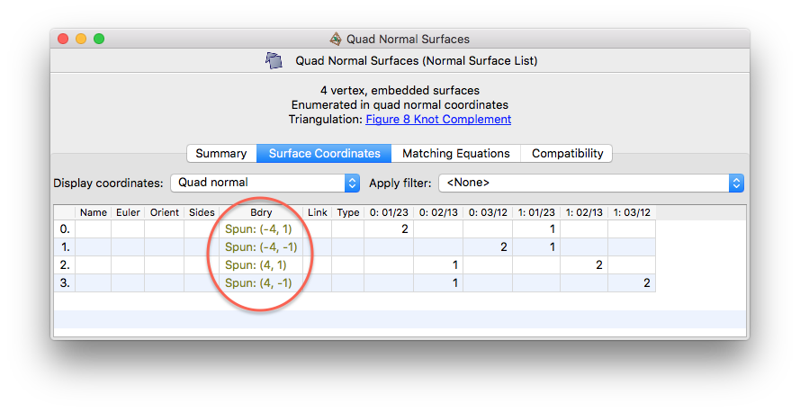
- Non-compact (4-manifolds only)
Indicates a non-compact hypersurface with infinitely many tetrahedra. As noted earlier, you should never see this unless you have used your own specialised enumeration algorithms—this is because Regina currently only enumerates hypersurfaces in standard coordinates, which produces compact hypersurfaces only.
- Link
Indicates if a surface is a vertex link or a thin edge link (i.e., the boundary of a small regular neighbourhood of a vertex or edge). If this is a one-sided surface whose double is a thin edge link (which can happen in 3-manifolds, but not 4-manifolds), then it will be reported as a thin edge link for these purposes.
The relevant vertex or edge will be listed also, using the vertex and edge numbers that appear in the first column of the vertex and edge viewers. Within a 3-manifold, it is possible for a normal surface to be the thin edge link for two edges at the same time; in this case both edges will be reported here.
If the (hyper)surface is not a vertex link or a thin edge link, then this cell will be left empty.
- Type (3-manifolds only)
Indicates if this is one of a few special types of normal surface that Regina identifies. Possible values are:
- Central
There is at most one normal or almost normal disc per tetrahedron (which may be a triangle, quadrilateral or octagon). The cell will also list the total number of normal discs (i.e., the total number of tetrahedra that this surface meets).
- Splitting
There is precisely one quadrilateral per tetrahedron and no other normal (or almost normal) discs. Although splitting surfaces are also central, only the word Splitting will be displayed.
If the surface is not one of these types, this cell will be left empty.
- Octagon (3-manifolds only)
Indicates which coordinate position contains the octagonal discs (if any), and how many octagonal discs there are. (Recall that the enumeration procedure insists that at most one coordinate position can have octagonal discs, but allows any number of octagons of that type.)
This column only appears if you enumerated using an almost normal coordinate system.
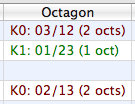
If this cell is empty, it means the surface does not contain any octagons at all (i.e., you have a normal surface, not an almost normal surface). Otherwise it will state which coordinate position contains the octagons and how many octagons there are (for example, K2: 03/12 (3 octs)).
The remaining columns give the precise normal coordinates of the surface or hypersurface.
You can view (hyper)surfaces in several different coordinate systems, not just the system you used for enumeration. To change the coordinate system, simply select a new system from the drop-down box above the table.
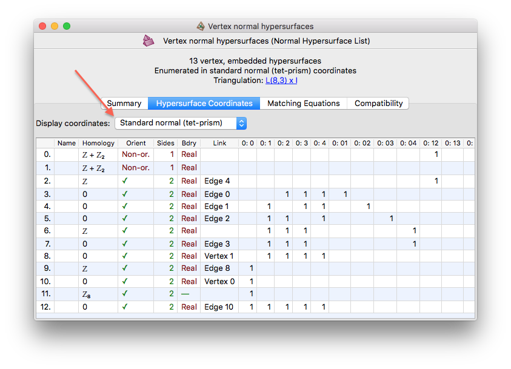
This will not re-enumerate surfaces in the new coordinate system; it will simply re-display the surfaces you already have. For example, if you enumerated normal surfaces in quadrilateral coordinates then your list will not contain any vertex links, and these will not suddenly appear when you view in standard coorinates. If your list contains spun-normal surfaces and you view them in standard coordinates, they will not disappear (instead you will see triangular coordinates of ∞).
For normal surfaces in 3-manifold triangulations, the available coordinate systems are as follows. Some options might not be available for your surface list (for instance, if you enumerated in standard normal coordinates then the almost normal systems will not appear).
- Standard normal (tri-quad)
This is the standard 7
n-dimensional coordinate system that typically appears in papers and textbooks (wherenis the number of tetrahedra). Each tetrahedron contributes four triangle and three quadrilateral coordinates.Triangle coordinates are labelled 0:0, 0:1, 0:2, 0:3, 1:0, etc., where coordinate
t:vcounts the number of triangles in tetrahedrontthat separate vertexvof that tetrahedron from the others. Here 0 ≤t<nandv∊ {0,1,2,3}.Quadrilateral coordinates are labelled 0:01/23, 0:02/13, 0:03/12, 1:01/23, etc., where coordinate
t:ab/cdcounts the number of quadrilaterals in tetrahedrontthat separate verticesaandbof that tetrahedron from verticescandd. Here 0 ≤t<n, anda,b,c,dare some permutation of 0,1,2,3.- Quad normal
These are the 3
n-dimensional quadrilateral coordinates, obtained from standard normal (tri-quad) coordinates by ignoring all triangles and considering only the quadrilaterals. See [Tol98] or [Bur09a] for details.- Standard almost normal (tri-quad-oct)
This is a 10
n-dimensional system for almost normal surfaces, obtained from standard normal (tri-quad) coordinates by adding three octagon coordinates per tetrahedron.Octagon coordinates are again labelled 0:01/23, 0:02/13, 0:03/12, 1:01/23, etc., where coordinate
t:ab/cdcounts the number of octagons in tetrahedrontthat separate verticesaandbfromcandd.To avoid ambiguity, all triangle, quadrilateral and octagon coordinate labels are prefixed with T, Q and K respectively. The full coordinates are therefore T0:0, T0:1, T0:2, T0:3, Q0:01/23, Q0:02/13, Q0:03/12, K0:01/23, K0:02/13, K0:03/12, T1:0, etc.
- Quad-oct almost normal
These are the 6
n-dimensional quadrilateral-octagon coordinates, obtained from standard almost normal (tri-quad-oct) coordinates by ignoring all triangles and considering only the quadrilaterals and octagons. See [Bur10b] for details.- Legacy almost normal (pruned tri-quad-oct)
Legacy coordinates are to support data files created in Regina 4.5.1 or earlier. These are like standard almost normal (tri-quad-oct) coordinates, except that surfaces with more than one octagon are deleted entirely.
If you created your surfaces in Regina 4.5.1 or earlier, there is no way to recover those surfaces with multiple octagons—they would have been deleted when you originally enumerated them. Instead you will need to enumerate them again. Your list will always be displayed with the label legacy almost normal coordinates to remind you of this.
From Regina 4.6 onwards, the enumeration process now keeps almost surfaces with multiple octagons (though they must be in the same coordinate position). This is important if you wish to generate new almost normal surfaces by taking convex combinations of old surfaces. If you are only interested in surfaces with one octagon, the Octagon column makes them easy to spot.
- Edge weight
This system has one coordinate for each edge of the triangulation. The coordinates are labelled 0, 1, 2, etc., where coordinate
ecounts the number of times the surface crosses edge numbere.Edge numbers and the tetrahedron edges to which they correspond can be found in the edge viewer, under the triangulation's Skeleton tab.
Edge weight coordinates are offered for viewing only. You cannot enumerate surfaces in edge weight coordinates.
- Triangle arc
This system has three coordinates for each triangle (2-face) of the triangulation. The coordinates are labelled 0:0, 0:1, 0:2, 1:0, etc., where coordinate
t:vrepresents the number of times the surface slices through triangletof the triangulation in an arc that truncates vertexvof that triangle. Herev∊ {0,1,2}.Triangle numbers and the tetrahedron faces to which they correspond can be found in the triangle viewer, under the triangulation's Skeleton tab. The three vertices 0,1,2 of each triangle correspond to the ordering of tetrahedron vertices that you see in the rightmost column of the triangle viewer.
Triangle arc coordinates are likewise offered for viewing only. You cannot enumerate surfaces in triangle arc coordinates.
For normal hypersurfaces in 4-manifold triangulations, the available coordinate systems are:
- Standard normal (tet-prism)
This is the 15
n-dimensional coordinate system that counts all tetrahedra and prisms of all types (wherenis the number of pentachora in the underlying triangulation). Each pentachoron contributes five triangle and ten prism coordinates.Tetrahedron coordinates are labelled 0:0, 0:1, 0:2, 0:3, 0:4, 1:0, etc., where coordinate
p:vcounts the number of tetrahedra in pentachoronpthat truncate vertexvof that pentachoron. Here 0 ≤p<nandv∊ {0,1,2,3,4}.Prism coordinates are labelled 0:01, 0:02, 0:03, 0:04, 0:12, …, 0:34, 1:01, etc., where coordinate
p:abcounts the number of prisms in pentachorontthat truncate the edge joining verticesaandbof that pentachoron. Here 0 ≤p<n, anda,b∊ {0,1,2,3,4} witha<b.- Prism normal
These are the 10
n-dimensional prism coordinates, obtained from standard normal (tet-prism) coordinates by ignoring all tetrahedra and considering only the prisms.Prism coordinates are (for the time being) offered for viewing only. You cannot enumerate hypersurfaces in prism coordinates.
- Edge weight
This system has one coordinate for each edge of the triangulation. The coordinates are labelled 0, 1, 2, etc., where coordinate
ecounts the number of times the hypersurface crosses edge numbere.Edge numbers and the pentachoron edges to which they correspond can be found in the edge viewer, under the triangulation's Skeleton tab.
Edge weight coordinates are offered for viewing only. You cannot enumerate hypersurfaces in edge weight coordinates.
Tip
If you grab and resize one of the coordinate columns, all of the coordinate columns will be resized at once. This is useful if you wish to fit as many columns on the screen as possible.
The Matching Equations tab shows a table with the individual matching equations that were used when you enumerated this list.
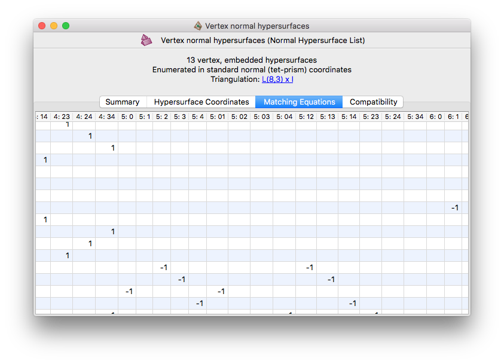
The matching equations will always use the same coordinate system that you used during enumeration. Remember that this coordinate system is always displayed above all of the tabs.
Each row of this table represents an individual matching equation. Each equation is a homogeneous linear equation, and the coefficients for each coordinate position are shown in the individual table cells. See the coordinate viewer for details on how the coordinate columms are labelled.
Tip
Like the coordinate viewer, if you grab and resize one of the columns then all columns will be resized at once. This is useful if you wish to fit as much of the matrix on screen as possible.
The Compatibility tab shows which pairs of (hyper)surfaces are locally and globally compatible with each other. This means:
- Locally compatible
Two (hyper)surfaces are locally compatible if they are able to avoid intersection in any given top-dimensional simplex of the triangulation (though not necessarily in all such simplices simultaneously).
For 3-manifolds, this means that two compatible normal surfaces can avoid intersecting in any given tetrahedron of the triangulation. That is, in each tetrahedron, they together use at most one quadrilateral or octagonal disc type.
For 4-manifolds, this means that two compatible normal hypersurfaces can avoid intersecting in any given pentachoron of the triangulation. That is, in each pentachoron, they together do not use two conflicting prism types.
- Globally compatible (shown for 3-manifolds only)
Two normal surfaces are globally compatible if they are able to avoid intersection in all tetrahedra of the 3-manifold triangulation simultaneously.
In other words, two surfaces are globally compatible if they can be made disjoint within the underlying triangulation.
The Compatibility tab shows this information visually using coloured matrices. It only displays one matrix at a time (either the local compatibility matrix or, for 3-manifolds only, the global compatibility matrix). You can switch between them using the drop-down box indicated below.
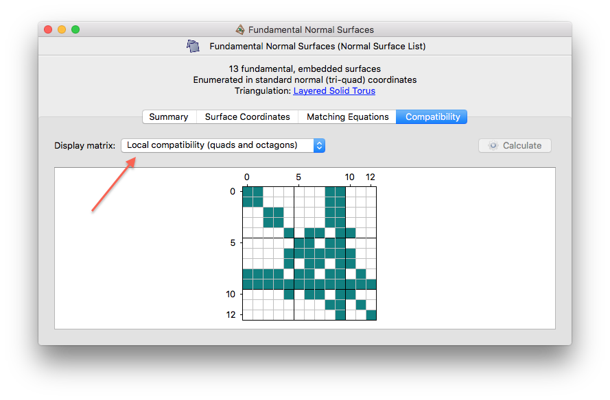
Each matrix has dimensions
S × S,
where S is the total number of (hyper)surfaces
in the list. Rows and columns are both numbered
0,...,S-1.
The cell at position
(x,y)
is filled if and only if the (hyper)surfaces numbered
x and y are
compatible. Recall that (hyper)surfaces are numbered in the leftmost
column of the coordinate viewer.
For some normal surfaces in 3-manifolds, Regina cannot test global compatibility. These include surfaces that are empty, disconnected, or spun. In such cases the corresponding rows and columns will be hashed out, as illustrated below.
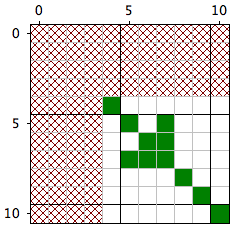
If you have too many surfaces or hypersurfaces in your list, Regina will not generate the compatibility matrices automatically. You can still compute them by pressing the Calculate button (indicated below).
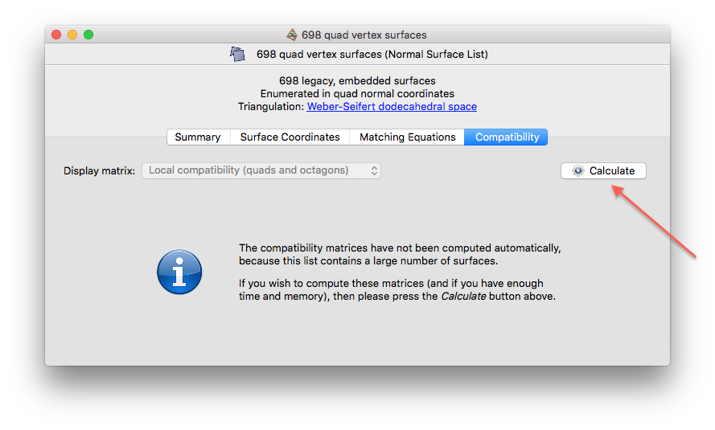
Within a 3-manifold triangulation, you can cut along a normal surface, or crush it using the techniques of Jaco and Rubinstein [JR03]. See the chapter on triangulations for details.
Within a 4-manifold triangulation, if you wish to study a normal hypersurface in more detail, you can triangulate it. This will create a new 3-manifold triangulation describing the topology of the hypersurface, which you can then attack with all of the 3-manifold machinery that Regina offers.
To triangulate a normal hypersurface, select your hypersurface in the list and then choose → from the menu.
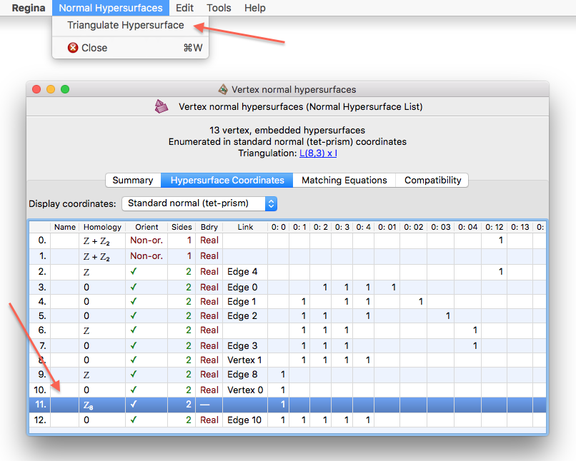
Regina will create a new 3-manifold triangulation, which will appear beneath the normal hypersurface list in the packet tree.
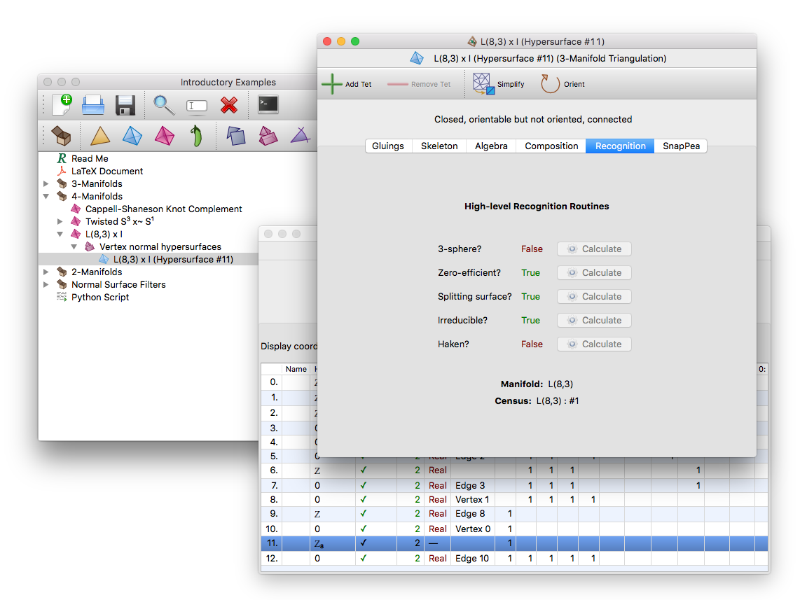
| Prev | Contents | Next |
| Normal Surfaces and Hypersurfaces | Up | Filtering Surfaces (3-D) |